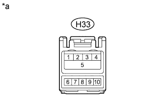

DTC CB-13 USB Over Current Detection |
| DTC Code | DTC Detection Condition | Trouble Area |
| CB-13 | An "iPod" or USB device overcurrent malfunction. |
|
| 1.REPLACE USB Device OR "iPod" |
Disconnect the USB device or "iPod" from the stereo jack adapter.
Turn the engine switch off.
Turn the engine switch on (ACC).
Connect a known good USB device or "iPod" to the stereo jack adapter.
| NEXT | |
| 2.CHECK FOR DTC |
Clear the DTCs (Click here).
Check for DTCs and check if the same DTC occurs again.
|
| ||||
| OK | ||
| ||
| 3.CHECK MULTI-MEDIA INTERFACE ECU |
|  |
Disconnect the H33 No. 1 stereo jack adapter assembly connector.
Measure the voltage according to the value(s) in the table below.
| Tester Connection | Condition | Specified Condition |
| H33-1 - H33-4 | Always | 5 V |
| *a | Front view of wire harness connector (to No. 1 Stereo Jack Adapter Assembly) |
|
| ||||
| OK | ||
| ||
| 4.CHECK HARNESS AND CONNECTOR (MULTI-MEDIA INTERFACE ECU - STEREO JACK ADAPTER) |
Disconnect the H34 multi-media interface ECU connector.
Disconnect the H33 No. 1 stereo jack adapter assembly connector.
Measure the resistance according to the value(s) in the table below.
| Tester Connection | Condition | Specified Condition |
| H34-4 - H33-4 | Always | Below 1 Ω |
| H34-1 - H33-1 | Always | Below 1 Ω |
| H34-4 - Body ground | Always | 10 kΩ or higher |
| H34-1 - Body ground | Always | 10 kΩ or higher |
|
| ||||
| OK | ||
| ||